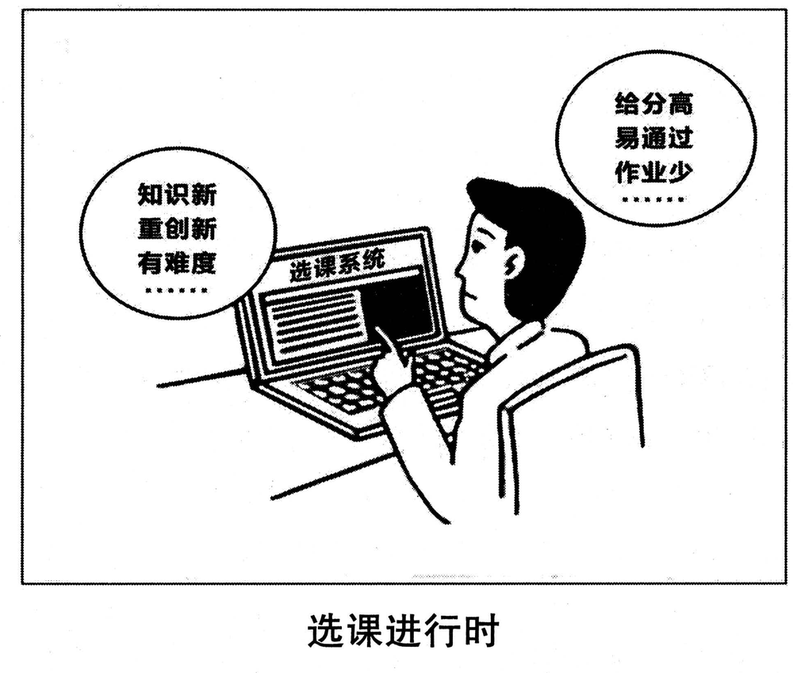

A小作文 · 给全校国际专家写邮件，邀请出席毕业典礼（10 分）
Write an email to all international experts on campus, inviting them to attend the graduation ceremony. In your email, you should include time, place and other relevant information about the ceremony.
You should write about 100 words neatly on the ANSWER SHEET.
Do not use your own name at the end of the email. Use “Li Ming” instead. (10 points)
💭 审题三件事
- ⭐⭐ 题干点了名的两项先写死，写成能核对的具体值。「next month」「in our school」都不叫时间地点——专家读完得能直接写进日历：from 9:00 to 11:00 a.m. on Friday, June 29 · the University Auditorium, next to the main library。星期和日期要对得上（编一个日子，就得保证那天真是星期几——2018 年 6 月 29 日确是星期五）。
- ⭐⭐ 「为什么请您」一句，别省。请人当评委，理由是「您懂行」；请人来出席毕业典礼，理由是「您出过力」——Many of our graduates owe part of their success to your lectures and guidance。毕业典礼请外人来，本身就是一次致谢：这一句把邀请从「通知您有个活动」升成「我们想当面谢您」。
- other relevant information 只挑「对这群人有用」的两三条。拿修饰语筛：international ⟹ 英文同传；experts ⟹ 前排留座；all ⟹ 每一位都请在某日前回复（顺手给一个回复的理由：好准备名牌）。着装、餐饮、停车也都算 relevant，但一百词装不下五六条——挑两三条、每条落到一个具体安排，比列一串「还有茶歇、还有合影」强。
⭐⭐ 十三年 Part A：2018 ＝ 2013 的体裁 × 2012／2016 的读者群
| 年份 | 体裁 | 读者是谁 | 第一句怎么起 | 落款 | 本年特有的坑 |
|---|---|---|---|---|---|
| 2007 | 建议信 | 校图书馆（机构） | I am writing to put forward several suggestions … | Li Ming | 建议只有口号没有可执行动作；写成投诉信 |
| 2008 | 道歉信 | 具名熟人 Bob | I am writing to apologize for … | Li Ming | 只道歉不给方案；方案没有「动作＋方式＋时间」 |
| 2009 | 致编辑信 | 报社编辑 | I am writing to express my concern about … | Li Ming | 建议里没有一条是编辑自己能办的 |
| 2010 | 通知 NOTICE （招募） | 一群人（无称呼） | Volunteers are needed for … | 机构名 | 写 Dear ＝ 体裁错；落款签 Li Ming |
| 2011 | 推荐信 · 荐物 | 未具名的一个朋友 | How have you been? I am writing to recommend … | Li Ming | 写成影评／剧透结局；通篇只有「我」没有「你」 |
| 2012 | 欢迎邮件 （以组织名义） | 一群国际学生 但仍是书信 | On behalf of the Students’ Union, I would like to extend a warm welcome to … | Li Ming ＋ Students’ Union | 按 2010 的手感写成通知；通篇 I 没有 we |
| 2013 | 邀请邮件 （担任角色） | 本校外教 | As chair of the English Club, I am writing to invite you to … | Li Ming | 只邀请、不交代工作量；没给答复期限 |
| 2014 | 建议信（撞 2007） | 本校校长 | As a third-year student, I am writing to suggest … | Li Ming | 建议写成对学生的劝告；用 should 下指令 |
| 2015 | 荐书邮件（撞 2011） | 读书会的一群会员 | As host of next Friday’s reading session, I would like to recommend … | Li Ming | 理由不对着读书会用途；剧透 |
| 2016 | 通知 NOTICE （告知 · 撞 2010） | 刚入学的国际学生（撞 2012） | Welcome to the University Library! To help all newly-enrolled international students … | Li Ming | 按 2012 写成欢迎信；信息写成广告 |
| 2017 | 推荐邮件 · 荐地方 （撞 2011／2015） | 具名的新到外籍教授 | Welcome to our city! Now that you have settled in, I would like to recommend … | Li Ming | 理由对谁都成立；推他家门口就有的；Dear James |
| 2018 本题 | 邀请邮件 · 请出席 （撞 2013） | 全校国际专家（一群人 · 撞 2012／2016 的国际读者群） | On behalf of the Students’ Union, I am writing to invite you to this year’s graduation ceremony. | Li Ming | ⭐ 时间地点写成「下个月」「在学校」；漏了为什么请您；称呼写成单数；写成通知（读者是一群人） |
| 2022 | 邀请邮件 （带队参赛） | 英国大学的教授 | On behalf of …, I am writing to invite you to … | Li Ming | 漏时间/地点/事由 |
- ⭐⭐ 2014 回到 2007 · 2015 回到 2011 · 2016 拼了 2010 × 2012 · 2017 拼了 2011／2015 × 2013 · 2018 又拼：体裁取 2013 的邀请信，读者取 2012／2016 的「一群国际读者」。⟹ 押体裁、押读者都没用，第六次验证；有用的仍是那四问：体裁词 · 读者（他们拿它做什么）· 以谁的名义 · Do not … 后面跟的是什么。
- ⭐⭐ 外国读者十二年里第六次，而且连着三年：2008 加拿大房东 · 2012 国际学生 · 2013 外教 · 2016 国际新生 · 2017 澳大利亚教授 · 2018 国际专家。⟹ 「对方是外国人」这一条筛子几乎年年用得上：语言（英文导览／英文同传）、文化差异（别推他家乡就有的）、礼节（称呼）。
- ⭐ Directions 在 2018 换了措辞（脚本扫过 2007–2017 十一年与 2022）：Do not sign your own name ⟹ Do not use your own name；书信类年份一直带着的 Do not write the address 从 2018 起删掉；两处都与 2022 一致。意思没变，照旧：落款 Li Ming，不写地址。
⭐⭐ 三封邀请信并排：2013 · 2018 · 2022（本页新增）
骨架一样（以谁的名义 → 请您做什么 → 时地 → 为什么是您 → 请答复），三年各换一个变量：请几个人、请来做什么、题干给了多少提示。
| 对照项 | 2013 · 请外教当评委 | 2022 · 请英国教授带队 | 2018 · 请国际专家出席 |
|---|---|---|---|
| 请几个人 | 一位（a foreign teacher） | 一位（a professor） | ⭐ 一群（all … experts） |
| 请来做什么 | 担任角色：当评委 | 担任角色：组队参赛 | ⭐ 只是出席：attend |
| 题干给的提示 | the details you think necessary | （无） | ⭐⭐ 点名 time, place ＋ other relevant information |
| 中间那块写什么 | 工作量（十人、每人五分钟、三项打分） | 活动主题 ＋ 每队几人 ＋ 住宿 | ⭐ 为您安排了什么（前排留座、英文同传） |
| 为什么是您 | 您的口语课让我们懂了什么是好演讲 | 您在工程领域的成就 | ⭐⭐ 我们的毕业生受过您的教——请您来就是谢您 |
| 称呼 | Dear Ms. Wilson, | Dear Professor Smith, | Dear Distinguished Experts, |
| 收尾 | Could you let us know by … whether you are available? | We are looking forward to your favorable reply. | ⭐ 请在某日前回复 ＋ 给个理由（好准备名牌） |
⚠️ Directions 限定词清算表（开考先圈出来）
| 限定词 | 它约束什么 | 违反的后果 |
|---|---|---|
| an email … In your email … the end of the email | 书信：称呼 ＋ 正文 ＋ 敬语 ＋ 落款 | 读者是一群人就顶格写 NOTICE ⟹ 体裁错（2012 的老坑） |
| to all … experts | ⭐ 一群人 ⟹ 称呼复数身份；正文用 you（指全体） | Dear Sir or Madam／Dear Professor ___ ⟹ 写成了给一个人 |
| international | ⭐ 语言要照顾到：英文同传／英文节目单 | 通篇只谈典礼多隆重，没一句想到他们听不听得懂 |
| on campus | 人在校内 ⟹ 地点用校内地标，不用写交通 | 写一大段「乘几路车到哪站」——对校内的人是废话 |
| inviting them to attend | 只是出席 ⟹ 不交代工作量，交代「为您安排了什么」 | 照 2013 写成「请您致辞／当嘉宾颁奖」——题干没说，给人加活 |
| include time, place | ⭐⭐ 点了名的两项，阅卷逐项找：星期 ＋ 日期 ＋ 几点到几点；楼名 ＋ 参照物 | next month / in our school ⟹ 要点不全；星期与日期对不上 |
| other relevant information | 拿修饰语筛两三条：留座 · 同传 · 回复期限 | 一条都不写 ⟹ 要点不全；列六七条 ⟹ 每条一句空话、超字数 |
| about 100 words | 95–115 | 写成 150 词挤占大作文时间 |
| Do not use your own name … Use “Li Ming” instead | 落款 Li Ming（可在下一行加 Students’ Union） | 签真名有判零风险 |
🧩 四个修饰语筛「other relevant information」（本页新增）
2016 两道筛子、2017 三道，2018 读者身上挂了四个：all · international · experts · on campus。过得越多越值钱，一道都不过的删掉；一百词里「为什么请您」＋ 时地 ＋ 两条安排 ＋ 回复期限刚好装满。
| 候选信息 | all | 国际 | 专家 | 校内 | 写不写 · 本文写成了哪一句 |
|---|---|---|---|---|---|
| ⭐⭐ 为什么请您：毕业生受过您的教 | ✅ | — | ✅✅ | ✅ | Many of our graduates owe part of their success to your lectures and guidance, and we would be honored to thank you in person. |
| ⭐⭐ 地点：礼堂 ＋ 图书馆旁 | — | — | — | ✅✅ | … in the University Auditorium, next to the main library … |
| ⭐ 前排留座 | ✅ | — | ✅✅ | — | Seats in the front row have been reserved for you … |
| ⭐⭐ 全程英文同传 | — | ✅✅ | — | — | … and English interpretation will be provided throughout. |
| ⭐ 请在某日前回复 ＋ 理由 | ✅✅ | — | ✅ | — | … please reply to this email by June 20 so that we can prepare your name cards. |
| 着装要求（正装／可穿学位袍） | ✅ | △ | ✅ | — | 备选：可替换「前排留座」，写 Formal dress is suggested, and academic gowns are available if you wish to join the procession. |
| 典礼后的茶歇／合影 | ✅ | — | △ | — | 备选：字数有余再加，一句 A reception will follow in the lobby. |
| 乘车路线、停车 | — | — | — | ✗ | ❌ 不写：他们就在校内（on campus） |
| 请您上台致辞 | — | — | △ | — | ❌ 不写：题干只说 attend——给客人临时加活，反而失礼 |
| 「典礼隆重、意义重大」 | ✗ | ✗ | ✗ | ✗ | ❌ 不写：这是形容词，不是信息——四道筛子一道都没过 |
- ⭐⭐ 星期和日期必须对得上：写 Friday, June 29，就得真是星期五。最稳的办法是只写日期不写星期（on June 29）；要写星期，就按考试当年（下一年的六月）推一下——2018 年 6 月 29 日确是星期五（已核）。毕业典礼放在六月下旬、上午，合常理。
- ⭐ 地点写「楼名 ＋ 一个他们认得的参照物」：the University Auditorium, next to the main library——on campus 的人认得图书馆，一个参照物比门牌号好用。
- ⭐ 时间写起止：from 9:00 to 11:00 a.m.——专家要排日程，只写开始时间他不知道要空出多久。❌ at 9 o’clock a.m.（o’clock 和 a.m. 重复）· ❌ in June 29（日期用 on）。
✍️ 范文（ 词 · 🟡 亮点点击看讲解）
Dear Distinguished Experts,
身份 ＋ 邀请 ＋ 理由On behalf of the Students’ Union, I am writing to invite you to this year’s graduation ceremony. Many of our graduates owe part of their success to your lectures and guidance, and we would be honored to thank you in person.
时间 ＋ 地点 ＋ 安排The ceremony will be held in the University Auditorium, next to the main library, from 9:00 to 11:00 a.m. on Friday, June 29. Seats in the front row have been reserved for you, and English interpretation will be provided throughout.
答复 ＋ 期待If you are able to attend, please reply to this email by June 20 so that we can prepare your name cards. We look forward to seeing you there.
Yours sincerely,
Li Ming
我谨代表学生会，诚邀各位出席今年的毕业典礼。我们的许多毕业生能有今天的成绩，离不开各位的授课与指导，我们很荣幸能当面向各位致谢。
典礼将于 6 月 29 日（星期五）上午 9 点至 11 点在大学礼堂举行，礼堂就在总图书馆旁边。我们已为各位预留了前排座位，典礼全程提供英文同声传译。
如能出席，请于 6 月 20 日前回复此邮件，以便我们为您准备名牌。期待在典礼上与各位相见。
李明 敬上
- ⭐⭐ 要点时间地点写虚了：at the end of next month · in our school。题干点了 time, place 的名，阅卷人会拿着这两个词去找——找到的必须是能写进日历的具体值。
- ⭐⭐ 要点漏了「为什么请您」：只写 We sincerely invite you to attend our graduation ceremony. 毕业典礼请外人，本身是在致谢——少了这一句，邀请就成了群发通知。
- ⭐ 要点other relevant information 一条没有，或者列成清单六七条（着装、茶歇、合影、停车……）。两三条、每条落到一个具体安排最稳。
- ⭐ 体裁读者是一群人，就写成了通知：顶格 NOTICE、没有 Dear、落款写学生会。题干三次说 email ⟹ 书信（2012 页的老坑，本年又挖了一次）。
- ⭐ 称呼❌ Dear Sir or Madam · ❌ Dear Professor Smith · ❌ Dear all · ❌ Dear international expert（单数） ⟹ ✅ Dear Distinguished Experts,（或 Dear International Experts,）。
- ⚠️ 越界给客人加活：We hope you can give a speech at the ceremony. 题干只说 attend——临时请人致辞要单独、提前、当面请，写进群发邀请里反而失礼。
- 语言❌ invite you to attend to the ceremony（attend 及物，不加 to） ⟹ ✅ attend the ceremony · ❌ The ceremony will be held on June 29 at 9 a.m. in the morning（a.m. 与 in the morning 重复） · ❌ We are honored to invite you（可以用，但偏套话） ⟹ ✅ 把荣幸落到一件事上：we would be honored to thank you in person。
- 字数about 100 words：95–115 最稳。本文 词（不含称呼与落款）。
- ⭐ 第一句交代身份 ＋ 邀请：On behalf of the Students’ Union, I am writing to invite you to this year’s graduation ceremony.——On behalf of 一次解决「谁有资格请」，与 2012、2022 同一个开法。
- ⭐⭐ 第二句是全文最值钱的一句：Many of our graduates owe part of their success to your lectures and guidance——owe A to B（A 归功于 B）；part of 留分寸，不说「全靠您」。它回答了题干没问、阅卷人却会看的一件事：为什么是这群人。
- ⭐ 荣幸落在一件事上：we would be honored to thank you in person——would be honored 是虚拟的客气；in person（当面）呼应 on campus：人就在校内，请过来一趟很自然。
- ⭐⭐ 时间地点一句写完：The ceremony will be held in the University Auditorium, next to the main library, from 9:00 to 11:00 a.m. on Friday, June 29.——地点在前、时间在后，时间从小到大（几点 → 星期 → 日期）；next to the main library 是给 on campus 的人的参照物。
- ⭐⭐ 两条安排各对一个修饰语：Seats in the front row have been reserved for you（experts ⟹ 礼遇）· English interpretation will be provided throughout（international ⟹ 听得懂）。两个被动句：主语是「座位」「同传」，把事情摆在前面，比 We have reserved … We will provide … 少两个 we。
- ⭐ 回复期限配一个理由：please reply to this email by June 20 so that we can prepare your name cards——so that 让「请回复」不像催促；all 这个修饰语在这里被回应：每一位都要回。
- 敬语 Yours sincerely：写给专家用它最稳；Best regards 也可，Love／Cheers 不行。落款 Li Ming 下一行可加 Students’ Union。
B大作文 · 图画作文（20 分）
Write an essay of 160–200 words based on the picture below. In your essay, you should
1) describe the picture briefly,
2) interpret the meaning, and
3) give your comments.
You should write neatly on the ANSWER SHEET. (20 points)

- 单图，一个人（2016、2017 连着两年两格，本年回到一格）。Directions 也跟着改回单数 picture，⚠️ 并且第一次写 the picture below（此前十一年都是 the following drawing／picture／pictures）。
- 主角：一名学生坐在笔记本电脑前，右手食指点在屏幕上；屏幕顶栏写着「选课系统」，下面分两栏——左栏几行文字（像课程列表）、右栏一块深色。他眉毛微抬、嘴抿着，看不出高兴也看不出为难——是在掂量。
- 两个圆形气泡，都没有尾巴：⚠️ 不是谁说出口的话（2017 的对话框有尾巴、指着人），⟹ 描图写 two bubbles，别写 he says。
- 左泡（压在屏幕左上角的前面）：「知识新 / 重创新 / 有难度 / ……」；右泡（在他后脑勺上方）：「给分高 / 易通过 / 作业少 / ……」。⭐ 两泡各三条、句句三个字、末尾都拖着省略号 ⟹ 清单没列完——两边都还有别的理由。
- 图注：「选课进行时」——⭐⭐ 「进行时」是个语法词：事情正在发生、还没完成。图上也对得上：手指点在屏幕上，但屏幕上没有「已选」「提交成功」一类的字 ⟹ 他还没选。
- ⚠️ 气泡的位置可以多看一眼（左泡贴着屏幕、右泡贴着脑袋，像是「课介绍里写的」和「他心里盘算的」），但图上没有标明——考场上别写成定论，写 hang beside him 最稳。
💭 审题：两张清单逐项对——只在一项上交锋，而且方向相反
- 先看到对比：左边是「好课」的标准，右边是「水课」的标准 ⟹ 大学生选课功利、爱挑容易的。这一步人人都能看到，照着写只够三档；而且「功利」是个结论——图上他还没选。
- ⭐⭐⭐ 再把两张清单逐项对，找它们量的是什么。左泡：知识新（学到什么）· 重创新（练成什么）· 有难度；右泡：给分高 · 易通过 · 作业少。⟹ 左泡三条全在说「这门课往你身上放了什么」，右泡三条全在说「这门课往成绩单上写了什么、要你付出多少」。右泡一个字没提学到什么；左泡一个字没提分数。两张清单唯一都量了的维度是「难度」——而且一个当优点（有难度）、一个当优点的反面（易通过）。这就是第二段。
- ⭐⭐ 再回到图注那三个字：「进行时」。他的手指还停在屏幕上 ⟹ 文章不是审判一个已经选了水课的人，而是对一个正在选的人说话。⟹ 第三段先承认右泡有它的道理（绩点关系到奖学金、保研）——别误伤（2017 的教训）；再给一个点鼠标之前能照做的动作；末句把「进行时」收回来：选课在进行，人也在进行。
- 「选课系统」✅ the course selection system ／ the online course registration system。❌ class choosing system · ❌ choose-lesson system——「课程」是 course，不是 lesson（lesson 是一节课）。
- 左泡「知识新／重创新／有难度」✅ new knowledge, a focus on innovation, a real challenge。⚠️ 三条写成同一种结构（都是名词短语），和右泡对齐；「有难度」写 a real challenge 或 challenging——❌ difficult 放进名词清单里就不齐了；❌ pay attention to innovation（动词短语，和另两条不齐）。
- 右泡「给分高／易通过／作业少」✅ high grades, an easy pass, little homework。⚠️ 「给分高」别直译 give high score；homework 不可数：❌ few homeworks ⟹ ✅ little homework ／ a light workload。
- 两串省略号：译成 “…” 或 and so on。⭐ 别丢——省略号说明清单没列完，范文把它原样留在引号里。
- 「选课进行时」✅ “Course Selection in Progress” ／ Choosing Courses: Now in Progress。⚠️ in progress 正好对「进行时」；❌ Course Selection Is Going On（像播报）· ❌ Selecting Course Time（「时」译成 time 就错了）。
📐 描图段三看（本图版 · 单图一人、两个气泡）
| 看什么 | 本图看出来的 | 写进文章的哪一句 |
|---|---|---|
| ① 看图上的字 | 屏幕顶栏（选课系统）＋ 两个三条的清单（各带省略号）＋ 图注（进行时） | … a laptop showing the course selection system … One lists “new knowledge, a focus on innovation, a real challenge …”; the other, “high grades, an easy pass, little homework …”. The caption reads: “Course Selection in Progress”. |
| ② 看最反常处 | ⭐⭐ 手指已经点在屏幕上，却还没选——动作做了一半 | … his finger pointing at the screen … He has not clicked yet. |
| ③ 看两个气泡的关系 | ⭐ 各三条、同样的格式、一左一右——是一个人心里的两杆秤，不是两个人 | Two bubbles hang beside him. |
⭐⭐⭐ 两张清单逐项对：各量了什么、谁没量什么（本页新增）
2017 页定下「两句话先找公约数」；2018 是两张清单，先把它们摆到同一张表上，看每一条落在哪个维度——空格比有字的格子更说明问题。
| 维度 | 左泡 | 右泡 | 说明什么 |
|---|---|---|---|
| 学到什么（内容） | 知识新 | （空） | 右泡一个字没提学什么 |
| 练成什么（能力） | 重创新 | （空） | 右泡也没提会变成什么样的人 |
| ⭐⭐⭐ 难不难 | 有难度（当优点） | 易通过（当优点） | 唯一两边都量了的维度——同一把尺子，读数的好坏相反 ⟹ 第二段落在这里 |
| 成绩单上写什么 | （空） | 给分高 | 左泡一个字没提分数 |
| 要付出多少 | （「有难度」里隐含） | 作业少 | 右泡把「付出少」当好处 |
| ⚠️ 感不感兴趣 | （空） | （空） | ⚠️ 两边都没提 ⟹ 写「选自己喜欢的课」是在答图上没有的题（跑题④） |
- ⭐⭐ 左泡三条是「课给你的」，右泡三条是「课要你的」和「课记给你的」——两张清单根本不在比同一样东西，所以不能写成「一个好一个坏」的简单对比。
- ⭐⭐⭐ 只有「难度」两边都量了，而且结论相反：同样是「难」，左泡记为好处（练得到东西），右泡记为成本（可能挂科、拉低绩点）。分歧不在「要不要好成绩」，在「难是好事还是坏事」——这句话写出来，第二段就不是复述了。
- ⭐ 省略号别放过：两张清单都没列完 ⟹ 别把人写成「只看分数」的单面人；他心里两杆秤都在，所以才需要「进行时」。
🧩 图上字的语法结构，决定文章的论证结构（十一型扩到十二型：新增「进行时图注 ＋ 两张清单」）
| 年份 | 图上的字是什么结构 | 文章就得怎么搭 |
|---|---|---|
| 2007 | 无字，只有两个想象气泡 | 靠对比两个气泡立意 |
| 2008 | 因果句：你一条腿，我一条腿；你我一起，走南闯北 | 顺着因果推。单线论证 |
| 2009 | 对举短语（同一主语 ＋ 两个形容词）：网络的“近”与“远” | 两边都写，还要回答为什么同一个东西既近又远 |
| 2010 | 比喻式判断句：文化“火锅”：既美味又营养 | 先解喻，再分别落实两个并列谓语 |
| 2011 | 引号双关式短语：旅程之“余” | 破字 → 对照句 → 指认施动者 |
| 2012 | 两句对白：全完了！／幸好还剩点儿。 | 转述 → 拿画面核对真假 → 看手 |
| 2013 | 一词图注 ＋ 并列标签：选择 ／ 求职·考研·出国·创业 | 全译 → 不排座次 → 追问谁来选 |
| 2014 | 两格时间标签 ＋ 一词图注：三十年前…… ／ 现在…… ／ 相携 | 两格同构描 → 列变与不变 → 在两格之间解图注 |
| 2015 | 偏正短语：手机时代的聚会 | 写中心语，拆开看哪一半还在，矛头别指定语 |
| 2016 | 取舍复句：与其只提要求，不如做个榜样 | 两分句各配一格 → 第二段写机制 → 第三段解限定副词「只」 |
| 2017 | 一字之差的动宾对举：“有书”与“读书” | 两个短语各配一格 → 盯住被换掉的动词 → 末段把两个动词收拢 |
| 2018 本题 | 进行时图注 ＋ 两张三条的清单：选课进行时 ／ 知识新·重创新·有难度…… ／ 给分高·易通过·作业少…… | ⭐ 三步走：① 两张清单全译（格式对齐、省略号留着）；② ⭐⭐⭐ 第二段把两张清单摆到同一把尺子上：各量了什么、谁没量什么、唯一交锋的那一项；③ ⭐⭐ 第三段对着「进行时」说话——他还没选，所以写给正在选的人，末句把「进行时」收回来 |
| 2022 | 对话：两名学生就要不要听讲座的两句话 | 转述两句对话并选边站 |
- ⭐⭐ 2007：两个人各一个气泡——守门员和射手看同一个球门，想象出一大一小 ⟹ 同一样东西，两种心态。
- ⭐⭐ 2018：一个人两个气泡——同一个学生，两张清单量的不是同一样东西 ⟹ 一个人心里的两杆秤。⟹ 第二段别写「两种学生」（图上只有一个人），要写「两种标准」。
- ⭐ 2013 与 2018 都是「图注 ＋ 并列标签」：2013 四条路不许排座次（人人有权选自己的路）；2018 两张清单可以分高下，但先承认右边的道理——区别在于图注：「选择」只给一个词，「选课进行时」给了一个还没完成的动作。
| 年份 | 现成联想 | 回画面查一遍 | 结论 |
|---|---|---|---|
| 2009 | 蛛网 ⟹ 陷阱 | 图里没有蜘蛛 | ❌ 联想错 |
| 2010 | 火锅 ⟹ 熔炉 | 每块料都还保留形状和名字 | ❌ 联想错 |
| 2011 | 河脏 ⟹ 工厂排污 | 图上没有工厂 | ❌ 联想错 |
| 2012 | 半杯水 ⟹ 乐观 vs 悲观 | 瓶里确实还剩、两人确实相反 | ✅ 成立，但少了那只手 |
| 2013 | 岔路口 ⟹ 选对那条路 | 四条路没被标出对错 | ⚠️ 半成立：隐含前提找不到 |
| 2014 | 子女扶老人 ⟹ 反哺／报恩 | 母亲在自己走、在笑 | ⚠️ 半成立：程度过了量 |
| 2015 | 低头族 ⟹ 手机有害 | 没有一个人痛苦，两个在笑 | ⚠️ 半成立：打错了靶 |
| 2016 | 「身教胜于言传 ⟹ 父母别说教」 | 右格要求还在，图注写的是「只」 | ✅ 成立，但删掉了「只」 |
| 2017 | 书架 ＋ 读书 ⟹ 「读书重质不重量」 | 右格报的正是一个数量目标 | ⚠️ 半成立：误伤正面格 |
| 2018 本题 | 选课 ⟹ 「大学生功利，专挑水课」 | 图注是进行时，手指还停在屏幕上——他还没选；右泡的理由也不全是虚荣（绩点真关系到奖学金、保研） | ⚠️ 半成立：抢了结局——替图里的人点了鼠标 |
- ⭐⭐ 规矩再补一句：现成联想写完，回头看图注的时态——「进行时」「……之前」「正在」一类的字说明事情还没完，文章就不能从结局写起。「大学生都选水课」一出手，第三段就只剩骂人，而图上那个人还在犹豫。
- ⭐ 十年这把尺子量出六种结果：错（2009–2011）· 成立但不够（2012 少一只手 · 2016 少一个字）· 半成立（2013 前提 · 2014 程度 · 2015 靶子）· 误伤正面格（2017）· 抢了结局（2018）。动作始终只有一个：回画面，逐项查——本年要查的是图注的时态。
- ⭐ 另一句常被背进来的「取法乎上，得乎其中」可以用——它说的正是「挑难的，才学得到东西」；但别顺着写成「所以难课一定好」：图上的左泡也只是一张清单，没说它一定兑现。
✍️ 范文（ 词 · 🟡 亮点点击看讲解）
①描图In the picture, a student sits before a laptop showing the course selection system, his finger pointing at the screen. Two bubbles hang beside him. One lists “new knowledge, a focus on innovation, a real challenge …”; the other, “high grades, an easy pass, little homework …”. He has not clicked yet. The caption reads: “Course Selection in Progress”.
②寓意Read the two lists side by side, and only one is about learning. The first describes what a course will put into the student; the second, what it will put on his transcript and how little it will demand of him. The only thing both lists measure is difficulty, and they score it in opposite ways: one counts it as a merit, the other as a cost.
③评论The second list is understandable, since grades decide scholarships and graduate offers. But a course chosen for its grade amounts to the bare minimum necessary to earn credits, not an education. So before clicking, ask every course one question: what will I be able to do afterwards that I cannot do now? Small choices now may turn out to have gigantic consequences later. The selection is in progress, and so is the student.
把两张清单并排读，只有一张是在谈学习。第一张写的是一门课会往学生身上放进什么；第二张写的是它会在成绩单上写下什么、又对他要求得多么少。两张清单唯一都量了的是难度，而打分的方向恰好相反：一张把它记作优点，另一张把它记作成本。
第二张清单可以理解，毕竟成绩关系到奖学金和研究生录取。但一门为了分数而选的课，只相当于拿到学分所需的最低限度，算不上教育。所以，点下鼠标之前，问每门课一个问题：学完之后，我能做到哪些现在做不到的事？眼下的小选择，日后可能带来巨大的后果。选课正在进行，这个学生也是。
🔁 一图三写：同一幅图，第三段的三个版本
前两段一个字不动，只换第三段——按 Directions 第 3 条的动词选版本。点一下卡片可以高亮对照。
- ⭐⭐ 立意替他点了鼠标：The student chooses the easy course without hesitation. 图注是「进行时」，手指还停在屏幕上——图上没有选的结果；从结局写起，就只剩批判了。
- ⭐⭐ 立意第二段只写「好课 vs 水课」：两张清单量的不是同一样东西。要写出各量了什么（放进人 vs 写上成绩单）和唯一交锋的那一项（难度，方向相反）。
- ⭐⭐ 语气把右泡骂成虚荣、懒惰：Students who only care about grades are lazy and short-sighted. 绩点真关系到奖学金和保研——先承认，再判分；骂人，第三段就只剩口号。
- ⭐ 描图把气泡写成他说的话：He says, “…” ／ He thinks, “…” 两个气泡都没有尾巴——写 two bubbles hang beside him，别替图定说话人。
- ⭐ 描图两张清单只译一张，或者只译前两条。三条都要译、省略号留着——第二段要逐项对，第一段少一条，第二段就对不上。
- ⭐ 描图漏译图注，或把「进行时」译丢：Course Selection ／ Choosing Courses。in progress 是全文最后一句的伏笔——丢了它，末句就没有来处。
- 语言❌ choose lessons ⟹ ✅ choose courses · ❌ few homeworks ⟹ ✅ little homework · ❌ water courses（字对字「水课」） ⟹ ✅ easy courses ／ soft options ／ “bird courses”（后两者偏口语，考场用 easy courses 最稳）。
- 跑题写成「选自己感兴趣的课」：两张清单都没有「兴趣」（见逐项对照表最后一行）——兴趣可以在第三段带一句，不能当主线。
- 字数160–200：185–198 最稳。本文 词。
- ⭐ 第一句带出屏幕和手：a student sits before a laptop showing the course selection system, his finger pointing at the screen——独立主格 his finger pointing … 省掉 with 和 is，把「动作做了一半」写进一个短语（2017 范文 his back to … 同一招）。
- ⭐ 气泡不写成话：Two bubbles hang beside him. One lists “…”; the other, “…”.——hang beside 不替图定说话人；the other, “…” 省略了 lists（逗号代替重复的动词），两张清单在一句里对齐。
- ⭐⭐ 一个五词短句点破「进行时」：He has not clicked yet.——现在完成时 ＋ yet：到此刻为止还没点；这是第三段「对正在选的人说话」的伏笔（2017 范文 Not one is in his hands. 同样是五个词）。
- ⭐⭐⭐ 第二段第一句写「只有一张在谈学习」：Read the two lists side by side, and only one is about learning.——祈使句 ＋ and（＝ If you read …），与 2016、2017 范文同一个开法；side by side 就是本页那张逐项对照表的动作。
- ⭐⭐ put into ↔ put on：what a course will put into the student; the second, what it will put on his transcript——同一个动词 put，只换介词和宾语：放进人 vs 写上纸；分号后面省掉 describes，对句更紧。
- ⭐⭐⭐ 唯一交锋的那一项：The only thing both lists measure is difficulty, and they score it in opposite ways: one counts it as a merit, the other as a cost.——measure ／ score ／ count 一路用「打分」的词，把两张清单写成两张评分表；merit ↔ cost 一正一负。
- ⭐⭐ 先承认右泡：The second list is understandable, since grades decide scholarships and graduate offers.——understandable 不是赞成，是「能理解」；守住分寸，第三段才有资格往下说 But。
- ⭐⭐ 借 2018 T4 ④❶：it amounts to the bare, bare minimum necessary to keep the Postal Service afloat, not comprehensive reform ⟹ amounts to the bare minimum necessary to earn credits, not an education——amount to A, not B 一句判分：学分是最低限度，教育是另一回事。
- ⭐ 一件能照做的事：ask every course one question: what will I be able to do afterwards that I cannot do now?——把左泡的「知识新、重创新」翻成一个可检验的问题；比「我们要选有价值的课」具体得多。
- ⭐⭐ 借 2018 T3 ④❻：small choices now may turn out to have gigantic consequences later——原样搬（去掉了 We are still at the beginning of this revolution and）；small ↔ gigantic、now ↔ later 双对仗，选课的一次点击正是一个 small choice。
- ⭐⭐⭐ 末句把「进行时」收回到人：The selection is in progress, and so is the student.——so is the student：人也「在进行中」、还没定型——图注说的是选课，末句说的是人；与第一段的 in progress 首尾相接。
03🩺 跑题诊断表（这幅图最容易滑向的五个方向）
选课、水课、绩点是考研人自己身上的事——越熟越容易一肚子话倒出来。下面五条按「有多容易滑过去」排序，①②是本图特有的。
| 跑向 | 长什么样 | 为什么错 | 回到正轨的那一句 |
|---|---|---|---|
| ① 写成「批判大学生选水课」 本图特有 | Nowadays many college students choose easy courses only for high grades, which is a sign of utilitarianism … | ⚠️⚠️ 抢了结局：图注是「进行时」，他还没选；而且把一个在犹豫的人写成「功利」，右泡的合理之处也一起否了 | He has not clicked yet. … The selection is in progress, and so is the student. |
| ② 写成「好课 vs 水课」两边各夸各骂 本图特有 | Challenging courses bring us knowledge, while easy courses waste our time … | 两张清单量的不是同一样东西（放进人 vs 写上成绩单），只有「难度」一项交锋——简单对比写不出这一层 | The only thing both lists measure is difficulty, and they score it in opposite ways. |
| ③ 矛头转向学校、评价体制 | Universities should stop offering easy courses, and the grading system must be reformed … | 主角换了：图上只有一个学生和他的屏幕；体制可以带一句，整段写就离开了画面（2015「矛头别指定语」的同类坑） | So before clicking, ask every course one question: … |
| ④ 写成「选自己感兴趣的课」 | Interest is the best teacher, so we should choose courses we like … | 两张清单都没有「兴趣」——主线换成兴趣，两个气泡就都用不上了 | Read the two lists side by side, and only one is about learning. |
| ⑤ 写成网上选课系统的利弊 | The online course selection system makes it convenient for students to … | 屏幕只是道具——「系统方不方便」图上一个字没画；主角一换成「技术」，题就跑了 | The first describes what a course will put into the student; the second, what it will put on his transcript. |
04🌏 图上的字怎么译 ＋ 选课／学习话题词块
本图最容易写成中式英语的是「选课」「给分高」「作业少」「水课」四个说法——一个 few homeworks、一个 water course，阅卷人一眼就能看出是在字对字。
| 中文 | ✅ 这样写 | ⚠️ 别这样写 |
|---|---|---|
| ⭐⭐ 选课进行时 | “Course Selection in Progress” ／ Choosing Courses: Now in Progress | Selecting Course Time · Course Selection Is Going On |
| ⭐ 选课系统 | the course selection system ／ the online course registration system | choose-lesson system · class choosing system |
| ⭐⭐ 知识新 ／ 重创新 ／ 有难度 | new knowledge, a focus on innovation, a real challenge | knowledge is new, pay attention to innovation, difficult（三条结构不齐） |
| ⭐⭐ 给分高 ／ 易通过 ／ 作业少 | high grades, an easy pass, little homework ／ generous grading, easy to pass, a light workload | give high score · easy passing · few homeworks |
| ⭐ 水课 | an easy course ／ a soft option | a water course（字对字） |
| 绩点 | GPA ／ grade point average ／ one’s grades | grade points number |
| 学分 | credits（earn credits 拿学分） | study scores · learning points |
| 成绩单 | a transcript | a score list · a grade paper |
| 保研 ／ 研究生录取 | graduate offers ／ admission to graduate school | protect-research · graduate school entering |
| 选修课 ／ 必修课 | an elective ／ a required course | a choosing course · a must course |
| 取法乎上，得乎其中 | Aim high, and you will land somewhere in the middle; aim low, and you will land lower still.（意译） | 字对字：Take the upper law, get the middle. |
🧺 选课／学习话题词块（可迁移到「考证热」「打卡学习」「功利与兴趣」「舒适区」类题目）
05素材联动 · 2018 本年七篇能喂这篇作文
⚠️ 翻译与大作文连续第七年不撞题（翻译讲莎士比亚时代的戏剧，翻译页 06 留了「撞不撞留到作文页核」——核完：不撞）。但同卷阅读三篇都能喂：T1 说课程该往创新走、T3 说小选择有大后果、T4 说最低限度不是改革——2017 是一篇（T3）喂大作文，2018 是三篇。
06📮 Part A 分诊表：十六类书信 ＋ 四类非书信（本年把「邀请信」再拆一行：请一群人出席）
读完 Directions 先在草稿纸上写四样：体裁词 / 读者（他手里有什么权限、他们拿它去做什么）/ 以谁的名义 / 要点数（含限定词）。
⚠️ 本年提醒我们：题干点了名的信息槽位（time, place），阅卷会逐项找；读者是一群人时仍然看体裁词定格式。
① 书信十六类（有称呼、有落款人名）
| 体裁 | 第一句（目的句） | 收尾句 | 这一类特有的雷区 |
|---|---|---|---|
| 建议信 · 给机构 2007 | I am writing to put forward several suggestions concerning … | I would be grateful if these could be taken into consideration. | 写成投诉信；建议只有口号没有可执行动作 |
| 建议信 · 给握着权限的人 2014 | As a …, I am writing to suggest how … might improve … | I would be grateful for your consideration. | 建议写给了第三方；用 should 下指令；Dear Headmaster |
| 道歉信 2008 | I am writing to apologize for + doing … | Please accept my sincere apologies. | 只道歉不给方案；过度辩解／过度自责 |
| 致编辑信 2009 | I am writing to express my concern about … | I do hope these ideas will reach your readers. | 写成檄文；建议里没有一条是编辑自己能办的 |
| 推荐信 · 荐物给一个人 2011 | How have you been? I am writing to recommend … to you | Shall we watch it together this weekend? | 写成影评／剧透结局；通篇只有「我」没有「你」 |
| 推荐信 · 荐物给一群人 2015 | As host of …, I would like to recommend … by … | Please come with your answer to one question: …? | 理由不对着那件共同的事；剧透；通篇 I 没有 we |
| 推荐信 · 荐地方给新来的人 2017 | Welcome to our city! Now that you have settled in, I would like to recommend two places … | If you like, I would be glad to show you around … Just let me know. | 理由对谁都成立；推他家乡就有的；写成导游词；称呼 Dear James |
| 欢迎信（以组织名义） 2012 | On behalf of …, I would like to extend a warm welcome to … | Whatever comes up, just reply to this email. | 读者是一群人就写成通知；Welcome you to … |
| 推荐信 · 荐人 | It is my pleasure to recommend Mr./Ms. … for … | I recommend him/her without reservation. | 通篇形容词、没有一件具体事例 |
| 邀请信 · 请一群人出席 2018 本题 | On behalf of …, I am writing to invite you to … Many of … owe part of their success to your … | If you are able to attend, please reply by … so that we can … We look forward to seeing you there. | ⭐ 时地写虚（题干点了名）；漏了「为什么请您」；称呼单数；给客人加活（请致辞）；写成通知 |
| 邀请信 · 请人带队参赛 2022 | On behalf of …, I am writing to invite you to … | We are looking forward to your favorable reply. | 漏时间/地点/事由；不说明「为什么请你」 |
| 邀请信 · 请人担任角色 2013 | As chair of …, I am writing to invite you to serve as … | Could you let us know by … whether you are available? | 不交代工作量；没有答复期限 |
| 感谢信 | I am writing to express my heartfelt thanks for … | Please accept my sincere gratitude once again. | 不写清对方做了哪一件具体的事 |
| 投诉信 | I am writing to complain about … | I would appreciate it if you could look into this matter. | 只发泄情绪、不提出明确诉求 |
| 咨询信 | I am writing to ask for information concerning … | I would appreciate an early reply. | 问题堆成一团——要 1) 2) 3) 编号问 |
| 申请信 | I am writing to apply for the position of … | I would be glad to attend an interview at your convenience. | 只夸自己不对岗；不留联系方式 |
② 非书信四类（无称呼、落款写机构、题干指定的人名或不落款）
| 体裁 | 开头 | 结尾 / 落款 | 这一类特有的雷区 |
|---|---|---|---|
| 通知 · 招募类 notice 2010 | 标题 NOTICE 居中；正文直入事由（Volunteers are needed for …） | 末句给行动指令或好处；落款照题干（2010 ＝ 机构名） | 按书信写（Dear… / Yours sincerely）；漏截止日期与报名渠道 |
| 通知 · 告知类 （须知 / 指南） 2016 | 标题 NOTICE 居中；一句欢迎 ＋ 点名读者（To help all … , here is what you need to know.） | 分块给信息（小标题 ＋ 数字）；末句一句期待；落款照题干（2016 ＝ Li Ming） | 信息写成广告或劝学；没有一句对准读者的特殊身份；按欢迎信写 Dear |
| 备忘录 memo | 顶部四行 To / From / Date / Subject，然后正文 | 不写客套，末句给下一步动作 | 漏掉顶部四行；写成对外的信 |
| 报告 / 摘要 report | 标题居中（Report on …）；首段交代目的与范围 | 末段给结论或建议；落款写机构或职务 | 通篇叙事没有结论 |
- ⭐⭐ 写不写称呼？看 Directions 的体裁名词，不看读者是谁。letter / email ⟹ 书信，有 Dear；notice / memo / report ⟹ 非书信。2012、2018 读者都是一群人，都是 email ⟹ 都要 Dear。
- ⭐ Dear 后面写什么？给了名字 ⟹ 照抄；给了全名 ＋ 头衔 ⟹ 头衔 ＋ 姓（2017 Dear Professor Cook）；给了机构 ⟹ Dear Editor / Dear Sir or Madam；什么都没给 ⟹ 自己起名；⭐ 写给一群人 ⟹ 复数身份（2015 Dear fellow members · 2018 Dear Distinguished Experts）；给了职务没给名字 ⟹ 自起姓 ＋ 头衔。
- ⭐ 以谁的名义？题干给了身份（2012 学生会 · 2015 host · 2016 librarian）⟹ 用它；没给、而这件事需要资格（2013 邀请当评委 · 2018 以学校名义请专家）⟹ 补一个身份；没给、也不需要资格（2017 推荐景点）⟹ 不补。
- ⭐ 落款写什么？照 Use “…” instead 抄，别凭体裁猜：通知 2010 落机构、2016 落 Li Ming。⚠️ 2018 起措辞改成 Do not use your own name、不再写 Do not write the address——意思不变。
- ⭐ 建议写给谁？（2014）建议必须是读者自己能办的。荐给谁、拿去做什么？（2015）理由挂到那件共同的事。
- ⭐⭐ 读者身上挂了几个修饰语？（2016 两个 · 2017 三个 · 2018 四个：all · international · experts · on campus）拿每个修饰语当一道筛子：每条要点至少过一道；每个修饰语全文至少回应一次。
- ⭐⭐ 题干点名了哪几项信息？（本年新增）点了名的（2018 time, place）逐项写成能核对的具体值；只给类别的（2010 qualifications · 2016 relevant information）自己挑两三条。
- ⭐ 请人来是「做事」还是「出席」？（本年新增）做事（2013 当评委 · 2022 带队）⟹ 交代工作量；出席（2018）⟹ 交代「为您安排了什么」，别给客人加活。
07可迁移框架（换题也能用）
邀请信 · 请一群人出席（典礼 / 讲座 / 开幕式 / 晚会）三段骨架
| 段 | 写什么 | 模具 |
|---|---|---|
| ① 身份 ＋ 邀请 ＋ 理由 | 以谁的名义；请来做什么；⭐⭐ 为什么是这群人（他们出过的力） | On behalf of ___ , I am writing to invite you to ___ . Many of ___ owe part of their success to your ___ , and we would be honored to thank you in person. |
| ② 时间 ＋ 地点 ＋ 安排 | ⭐⭐ 楼名 ＋ 参照物；起止时间 ＋ 星期 ＋ 日期；两条安排各对一个修饰语 | The ___ will be held in ___ , next to ___ , from ___ to ___ on ___ . Seats in the front row have been reserved for you, and ___ will be provided throughout. |
| ③ 答复 ＋ 期待 | 回复期限 ＋ 一个回复的理由（so that）＋ 一句期待 | If you are able to attend, please reply to this email by ___ so that we can ___ . We look forward to seeing you there. |
- 点了名的信息写成能核对的值：专家读完能直接写进日历。
- 请人来就说清「为什么是您」：评委看懂行（2013），出席看出过力（2018）。
- 「出席」不加活，「做事」讲工作量——先分清是哪一种邀请。
图画作文骨架 · 一人两念 ＋ 两张清单 ＋ 进行时图注（「选专业」「选工作」「选城市」「选考证」一类还没做决定的图时用）
| 段 | 动作 | 模具 |
|---|---|---|
| ①描图 | 人 ＋ 屏幕／场景上的字 ＋ ⭐ 动作做了一半（独立主格）→ 两个气泡（不写成话）→ 两张清单全译、省略号留着 → ⭐ 一个短句：还没选 → 图注 | In the picture, ___ sits before ___ , his finger ___ . Two bubbles hang beside him. One lists “___ …”; the other, “___ …”. He has not ___ yet. The caption reads: “___ in Progress”. |
| ②寓意 | 三步：① ⭐⭐⭐ 并排读：只有一张在谈正事 ② 各量了什么（放进人 vs 写上纸）③ ⭐⭐ 唯一交锋的那一项，方向相反 | Read the two lists side by side, and only one is about ___ . The first describes what ___ will put into ___ ; the second, what it will put on ___ . The only thing both lists measure is ___ , and they score it in opposite ways: one counts it as a merit, the other as a cost. |
| ③评论 | ⭐ 先承认另一边的道理 → 一句判分（最低限度 ≠ 真东西）→ ⭐⭐ 一个做决定之前能照做的动作 → 小选择大后果 → 末句把「进行时」收回到人 | The second list is understandable, since ___ . But ___ amounts to the bare minimum necessary to ___ , not ___ . So before ___ , ask ___ one question: ___ ? Small choices now may turn out to have gigantic consequences later. The ___ is in progress, and so is the ___ . |
08📊 十三年大作文横向对照（基础版七年 ＋ 珍藏版五年 ＋ 样板年 2022）
| 年份 | 图里画了什么 | 主题落点 | 第 3 条要求 | 本年特有的坑 |
|---|---|---|---|---|
| 2007 | 守门员与射手各自想象中的球门（两个气泡） | 自信心 / 心态 | support with an example | 看成「乐观 vs 悲观」；第三段不举例 |
| 2008 | 两个各失一腿的人搭肩前行 | 合作 / 优势互补 | give your comments | 写成「关爱残疾人」；漏译图注 |
| 2009 | 巨大的蜘蛛网，网眼里坐满了人 | 网络时代的「近」与「远」 | give your comments | 把蛛网读成陷阱；只写一半 |
| 2010 | 冒热气的火锅，17 块料写着中外文化符号 | 文化多元共处 | give your comments | 把火锅读成熔炉；两个谓语只写一个 |
| 2011 | 小船顺流而下，游客头也不回把东西扔出舷外 | 公德 / 谁弄脏的 | give your comments | 写成工厂排污；把图注读成「旅行之余」 |
| 2012 | 一只倒下的酒瓶，两人两句对白 | 面对损失的心态 ＋ 行动 | give your comments | 把右边的人写成阿Q；各打五十大板 |
| 2013 | 一模一样的毕业生挤在四条空路前；图注「选择」 | 选择要由个人做出 | give your comments | 给四条路排座次；写成就业形势 |
| 2014 | 两格：三十年前母亲牵女儿；现在女儿挽母亲；图注「相携」 | 隔着时间完成的「互相」 | give your comments | 写成养老问题；只写一格 |
| 2015 | 四个年轻人围着没动的菜各看手机；图注「手机时代的聚会」 | 聚会只发生了一半 | give your comments | 写成手机伤身；科技双刃剑 |
| 2016 | 两格：父亲看电视喊儿子学习；父亲伏案、儿子在身后读书；图注「与其只提要求，不如做个榜样」 | 孩子一直在模仿；要求从嘴上挪到了桌上 | give your comments | 复述图注；丢掉「只」把要求全否 |
| 2017 | 两格两个人：一个背对满墙书架说「我有这么多书」；另一个坐在摊开书、夹书签的桌前说「我争取今年读完 20 本书」；图注「“有书”与“读书”」 | 两个人都在数，数的东西不同；真正的「有」只能靠「读」 | give your comments | 写成「重质不重量」误伤右格；编成一个人的前后变化 |
| 2018 本题 | 单图一人两个气泡：学生对着「选课系统」手指点在屏幕上；左泡「知识新·重创新·有难度……」、右泡「给分高·易通过·作业少……」；图注「选课进行时」 | 两张清单只有一张在谈学习，唯一交锋的是难度；他还没选 | give your comments | ⭐ 替他点了鼠标（批判功利选课）；写成「好课 vs 水课」简单对比；写成「选感兴趣的课」 |
| 2022 | 两名学生在讲座海报前争论要不要去听 | 学习观 / 跨界吸收 | give your comments | 不站队、和稀泥；漏引对话 |
- 凡是图上有字（对话、标语、图注、标签、清单），第一段就必须把字译进英文。十三年里只有 2007 没字；图上字有几个并列成分，就得译出几个；限定副词一个都不能丢（2016）；两格都有对话框时两个都要译（2017）；⭐ 2018 补一条：清单要逐条全译、格式对齐、省略号留着——第二段要逐项对。
- ⭐ 修订：图上字的语法结构决定第二段的论证结构——十一型扩到十二型。……一字之差的动宾对举（2017）／进行时图注 ＋ 两张清单：把清单摆到同一把尺子上、找唯一交锋项，第三段对着「还没完成」说话（2018）；2007 两人两泡、2018 一人两泡，是一对。
- ⭐⭐ 修订：「现成联想」这把尺子十年量出六种结果。错（2009–2011）→ 成立但不够（2012 · 2016）→ 半成立（2013 前提 · 2014 程度 · 2015 靶子）→ 误伤正面格（2017）→ 抢了结局（2018「功利选水课」替他点了鼠标）。⟹ 写完回头查两样：有没有误伤正面人物、有没有写出图上还没发生的事。
- 第三条 Directions 的动词决定第三段的形态：comment ⟹ 表态 ＋ 机制或规矩；example ⟹ 必须举例。十三年里十二年是 comments，唯一的 example 在 2007。
- ⭐ 修订：Part C 与 Part B 连续三年撞题（2009–2011）后，连续七年不撞（2012–2018），但同卷阅读年年能借：2017 是 T3 一篇；2018 是 T1（课程该往创新走）、T3（small choices now）、T4（bare minimum）三篇。
- ⭐ 修订：人物图先判关系——两人图六型不变，本年新增「一人两念」：2007 对称 · 2008 互补 · 2012 对照（同格）· 2022 对立 · 2014 轮换 · 2016 示范与模仿 · 2017 对照（分格）；2018 只有一个人、两个气泡 ⟹ 写「两种标准」，别写「两种学生」。
- ⭐⭐ 群像图先看人与人之间有没有差别（2013 人同路异 · 2015 人异动作同 ＋ 笑是冲着谁的）。
- ⭐⭐ 两格图先问「是不是同一批人」，再列「变 / 不变」——2014、2016 同一批人，可写变化；2017 两个不同的人，只能写对照。不变项仍是立足点。
- ⭐⭐⭐ 主题会重样，题眼不会（2009 蛛网 ↔ 2015 饭桌；2013「选择」↔ 2018「选课」：同是选，2013 不许排座次，2018 可以分高下但先承认另一边）。
- ⭐⭐⭐ 图注一旦直接说出论点，第二段就不许复述它（2016）；2017 图注只给两个短语、2018 图注只给一个事件 ⟹ 第二段要自己说出「差在哪」。
- ⭐⭐ 图上有两句话／两张清单时，先找它们的公约数或交锋点。2012 两句对白方向相反 ⟹ 写心态之差；2017 两句结构相同（都报数）⟹ 公约数是不变项；2018 两张清单量的东西不同 ⟹ 找唯一两边都量了的一项（难度），再看方向。
- ⭐⭐ 新增：图注带时态，文章就跟着时态走。2018「进行时」＝ 还没完成 ⟹ 第一段写「还没选」、第三段写给正在选的人、末句把「进行时」收回来；从结局写起（他选了水课）就是替图编故事——与 2017「两格不是同一个人 ⟹ 不许写后来他醒悟了」同一条纪律：图上没发生的，不写。